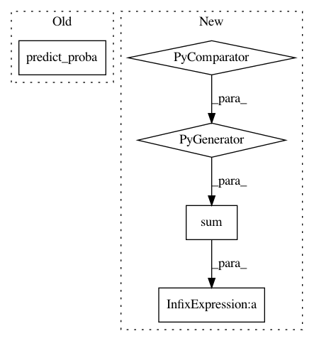

25723006dbd088a24215b23242e55d06e12afd8e,src/skmultiflow/meta/additive_expert_ensemble.py,AdditiveExpertEnsemble,predict,#AdditiveExpertEnsemble#Any#,66
Before Change
self.n_samples += X.shape[0]
def predict(self, X):
return np.array([np.argmax(self.predict_proba(X))])
def predict_proba(self, X):
return self._aggregate_expert_predictions(
After Change
preds = np.array([np.array(exp.estimator.predict(X)) * exp.weight
for exp in self.experts])
sum_weights = sum(exp.weight for exp in self.experts)
aggregate = np.sum(preds / sum_weights, axis=0)
return (aggregate + 0.5).astype(int) // Round to nearest int
def predict_proba(self, X):
raise NotImplementedError
In pattern: SUPERPATTERN
Frequency: 3
Non-data size: 5
Instances
Project Name: scikit-multiflow/scikit-multiflow
Commit Name: 25723006dbd088a24215b23242e55d06e12afd8e
Time: 2019-04-14
Author: andrecruz97@gmail.com
File Name: src/skmultiflow/meta/additive_expert_ensemble.py
Class Name: AdditiveExpertEnsemble
Method Name: predict
Project Name: albahnsen/CostSensitiveClassification
Commit Name: 7dac796eaba69e634ba9deb920284dad9f51aeff
Time: 2014-08-09
Author: al.bahnsen@gmail.com
File Name: costcla/models/bagging.py
Class Name: BaggingClassifier
Method Name: predict
Project Name: scikit-multiflow/scikit-multiflow
Commit Name: 7e0e9b744c1c307d3e42f8feae764ee090fad1ce
Time: 2019-04-08
Author: andrecruz97@gmail.com
File Name: src/skmultiflow/meta/dynamic_weighted_majority.py
Class Name: DynamicWeightedMajority
Method Name: predict